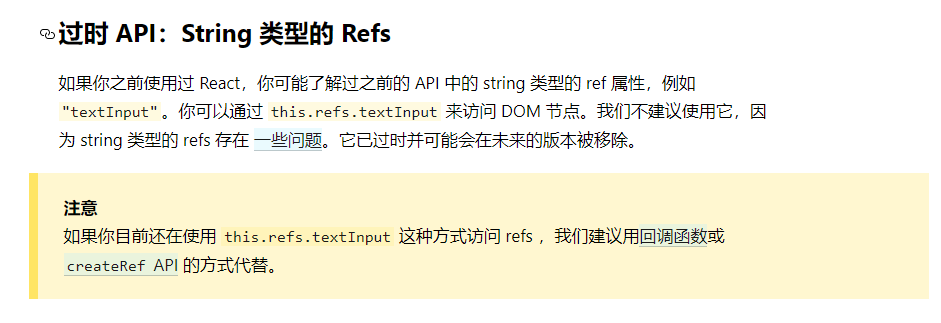
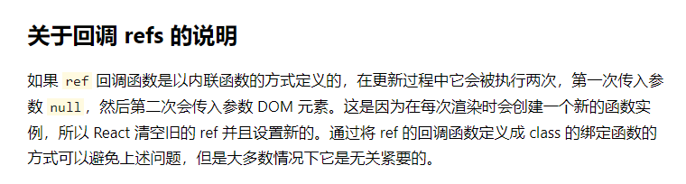
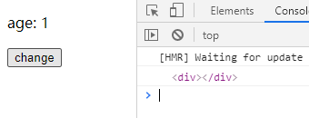

006-refs获取DOM
react的refs就和vue2的refs一样，用来获取指定的DOM
class App extends React.Component {
componentDidMount () {
console.log(this.refs.inp); // 通过refs获取dom
}
render () {
return (<input ref="inp" type="text"/>);
}
}
1、字符串形式的ref - 不推荐使用
像上面的例子，就是字符串的ref，官网已经不推荐使用这种写法的ref，因为写错了页面的性能会降低很多

2、回调函数的ref - 推荐使用
当给ref传入一个回调函数的时候，react会自动调用该函数，并且将当前DOM对象作为参数传递给回调函数
那么就可以在回调函数中将该DOM赋值给类组件实例的属性上
比如下面的例子
class App extends React.Component {
componentDidMount () {
console.log(this.inpRef);
}
render () {
return (<input ref={curNode => {this.inpRef = curNode}} type="text"/>);
}
}
看官网对这种写法的ref有个说明

那么这个是什么意思呢，我们来看下面的例子
class App extends React.Component {
state = {age: 1};
change = () => {
this.setState({
age: this.state.age+1
});
};
render () {
return (
<div>
<div ref={curNode => {console.log(curNode)}}></div>
<p>age: {this.state.age}</p>
<button onClick={this.change}>change</button>
</div>
);
}
}
当刚刷新页面的时候console.log(curNode)被执行，并且curNode=Div没问题

而当我们点击按钮改变state，react会自动触发render()，这个时候console.log(curNode)就执行了2次，并且第1次的curNode=null，而第2次的curNode=Div
那么为什么会这样呢？
- 页面刷新之后，第一次初始化组件，执行
render() - 执行到
<div ref={curNode => {console.log(curNode)}}></div>的时候，react发现ref接收的是一个函数，就会调用该函数，我们暂且将其命名为函数A - state改变，自动触发
render() - react执行到
<div ref={curNode => {console.log(curNode)}}></div>的时候，因为ref接收的是一个函数，这个时候的函数可不是函数A了，是一个新函数，之前的函数A执行完了被释放掉了。 - react不知道之前函数A做了什么动作，为了保证能完整的清空，所以第1次传了个null
- 然后react紧接着再调一次，这个时候就把当前的DOM节点传递进来
react官网已经说明，这个机制不会造成什么问题，如果一定要改，可以换成下面的写法
class App extends React.Component {
state = {age: 1};
change = () => {
this.setState({
age: this.state.age+1
});
};
// 1. 抽成一个属性+箭头
setDom = (curNode) => {
console.log(curNode);
this.inpRef = curNode;
};
render () {
return (
<div>
{/* 2.这里ref改为调用方法 */}
<div ref={this.setDom}></div>
<p>age: {this.state.age}</p>
<button onClick={this.change}>change</button>
</div>
);
}
}
3、createRef - react最推荐的写法
react暴露了createRef()，该方法返回一个容器，该容器用来存储被ref标记的DOM
class App extends React.Component {
myInp = React.createRef();
componentDidMount() {
console.log(this.myInp.current); // 获取到DOM
}
render () {
return (
<div ref={this.myInp}>1111</div>
);
}
}
注意:
createRef()只能存一个DOM对象，如果一个html中有多个同名的ref，只会认最后一个
class App extends React.Component {
myInp = React.createRef();
componentDidMount() {
console.log(this.myInp.current); // 得到的是<h2>
}
render () {
return (
<div>
<h1 ref={this.myInp}>1111</h1>
<h2 ref={this.myInp}>2222<h2v>
</div>
);
}
}